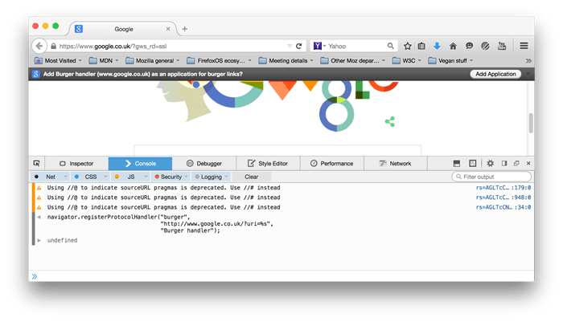

The {{domxref("Navigator")}} method
registerProtocolHandler() lets websites register their
ability to open or handle particular URL schemes (aka protocols).
For example, this API lets webmail sites open mailto: URLs, or VoIP sites open
tel: URLs.
navigator.registerProtocolHandler(scheme, url);
navigator.registerProtocolHandler(scheme, url, title),
which most browsers still support (see the compatibility table below). It is recommended to
still set the title, since browsers that support the updated spec will most likely be
backwards-compatible and still accept the title (but not use it).scheme"sms" scheme.
url%s, as a placeholder that will be replaced with the escaped
URL to be handled.
https scheme. Older browsers also supported http.title {{deprecated_inline}}https:, about:, etc.)%s placeholder is missing from the handler URL.For security reasons, registerProtocolHandler() restricts which schemes
can be registered.
A custom scheme may be registered as long as:
web+web+
prefixFor example, web+burger, as shown in the {{anch("Example")}} below.
Otherwise, the scheme must be one of the following:
bitcoingeoimircircsmagnetmailtomatrixmmsnewsnntpopenpgp4fprsipsmssmstosshtelurnwebcalwtaixmppIf your site is burgers.example.com, you can register a protocol handler
for it to handle web+burger: links, like so:
navigator.registerProtocolHandler("web+burger",
"https://burgers.example.com/?burger=%s",
"Burger handler"); // last title arg included for compatibility
This creates a handler that lets web+burger: links send the user to your
site, inserting the accessed burger URL into the %s placeholder.
This script must be run from the same origin as the handler URL (so any page at
https://burgers.example.com), and the handler URL must be http
or https.
The user will be notified that your code asked to register the protocol handler, so
that they can decide whether or not to allow it. See the screenshot below for an example
on google.co.uk:

{{Compat}}